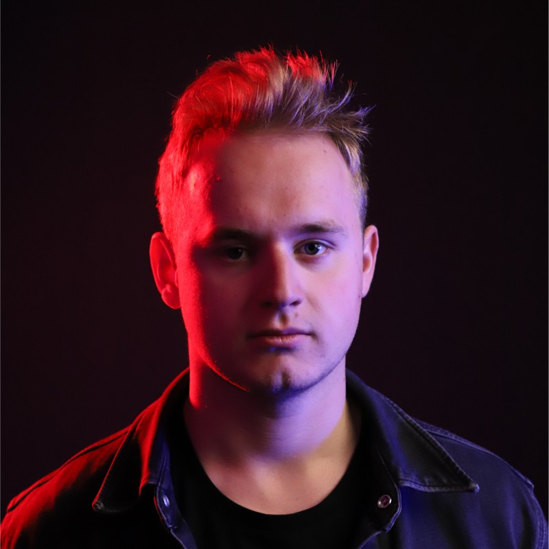
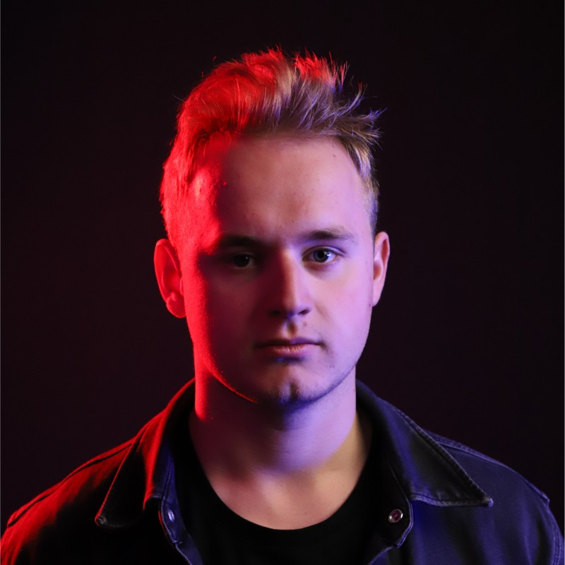
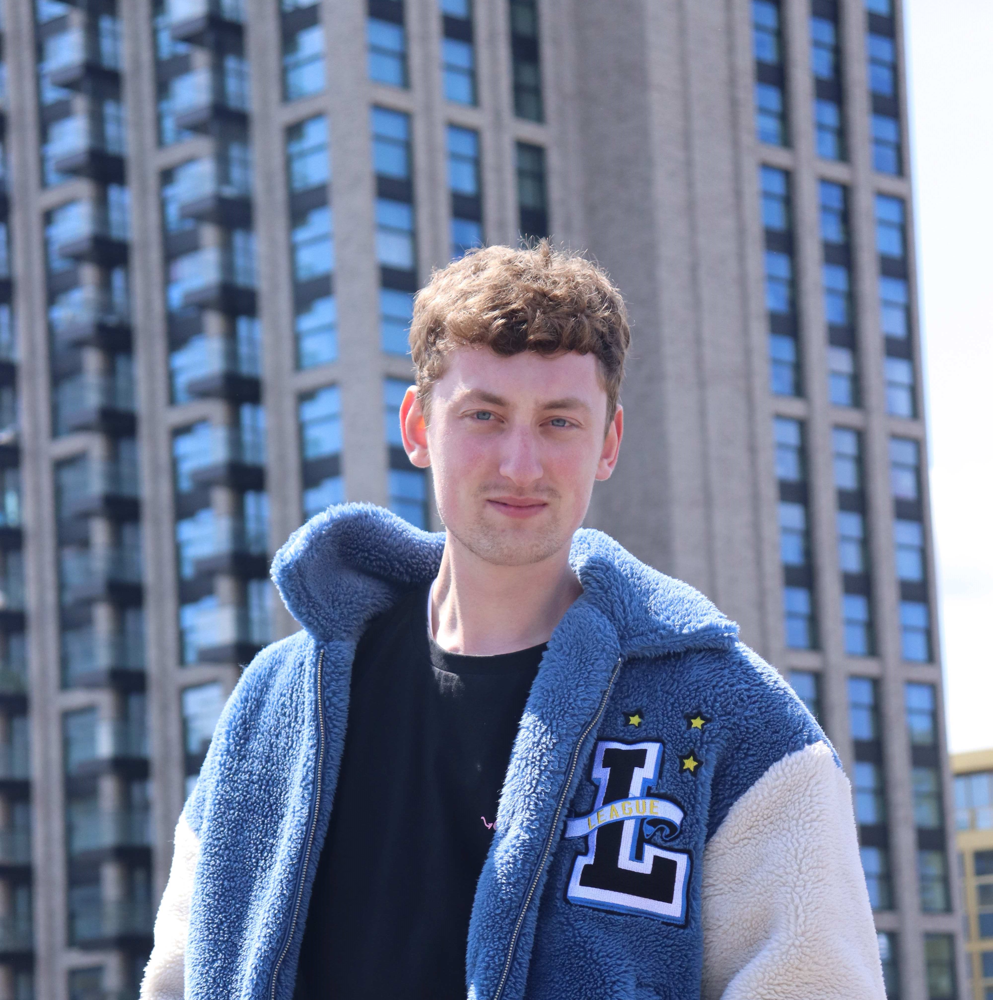
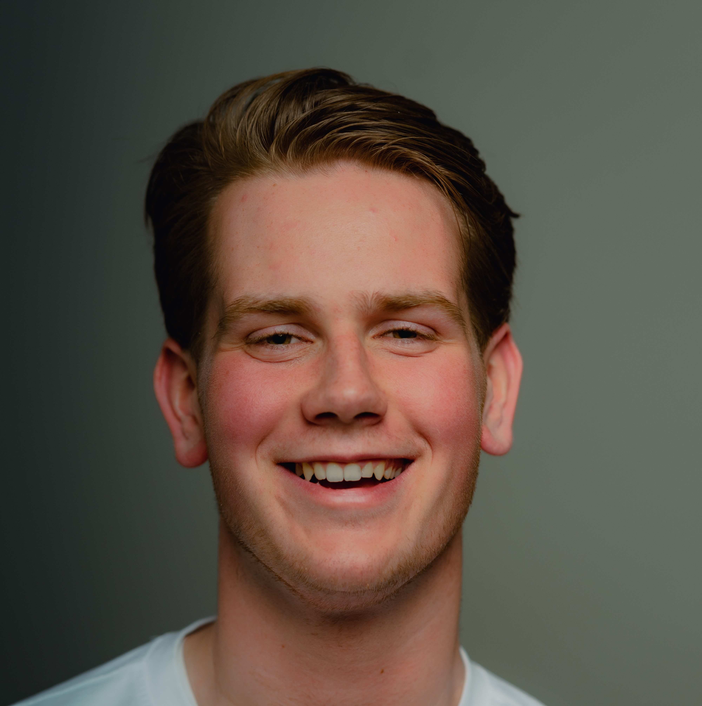

The creation of the team:
The team was created quickly, we all knew each other from previous classes and we knew that we could work together. As extra we had Vincent, but Vincent ended up leaving the studies a week later.
but nonetheless we had a good team and we were ready to start working on the project. We all had our own skills and weakneses which made working together great, beceause we could help each other out where needed.
 

Member - Maks:
Is an 20 year old student from Poland who is currently studying at Fontys university of applied sciences in Eindhoven. He is currently in his 1st year of the study ICT & Media Design.
Maks is a hardworking young man with his own business on the side. He is a person who likes to work on the front-end of a project, but he also likes to work on the design of a project.
he likes to be creative and is a person with who you can laugh with, but he can also be serious when needed. during this project he will be doing the design, the front-end and the documentation the project together .
Member - Koen:
Koen is an 22 year old student from the Netherlands. He is currently studying at Fontys university of applied sciences in Eindhoven. He is currently in his 1st year of the study ICT & Media Design.
He is a creative person who likes to work on the design of a project and is also a person who likes to work on the front-end of a project. Koen is a hardworking member who likes to work together with other people,
and a person who likes to help other people out when they need help. during this project he will be doing the design and the front-end of the project.


Member - Jasper:
i am Jasper a 20 year old student from the Netherlands. I am currently studying at Fontys university of applied sciences in Eindhoven. I am currently in my 1st year of the study ICT & Media Design. I really enjoy working on the front and back-end of a project,
but i also enjoy working on the design of a project. I am a hardworking teamplayer who likes to work together with other people, and a person who likes to help other people out when i see they need help.
during this project i will be doing the research, documentation and the back-end of the project.